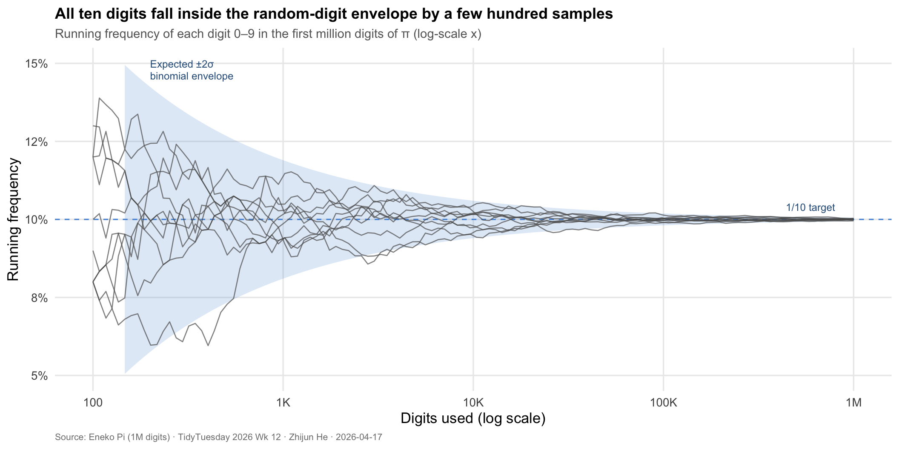
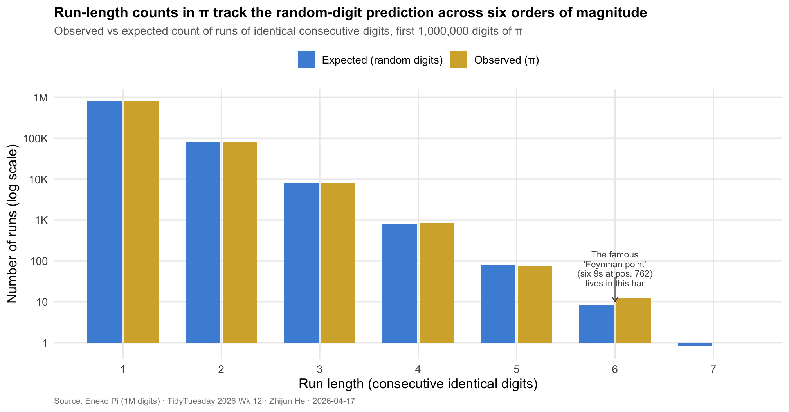

A Million Dice Rolls
TidyTuesday 2026 · Week 12 · The First One Million Digits of π
Background
π is one of a handful of numbers for which the shape of its decimal expansion has been a live research question for three centuries. It is irrational, so its digits never terminate and never settle into a repeating block. It is transcendental, so no polynomial equation with rational coefficients has π as a root. But the statistical question — whether its digits, in every base, appear with the long-run frequencies one would get from rolling a fair ten-sided die — is open. A number with that property is called normal in base 10. Émile Borel proved in 1909 that almost every real number is normal; what remains unproven, more than a century later, is that any specific “interesting” number actually is. It is not known whether π, or e, or √2, or ln 2 is normal.
What mathematicians have is strong empirical evidence. Every statistical test that has been run on π’s digits — to the tens of billions, in several recent efforts — has failed to distinguish them from the output of a uniform random number generator. One million digits is a modest slice of that record, but it is large enough to run the basic tests with real statistical power. If π were not behaving like a normal number, there is a fair chance we would see it here. And it is small enough that every calculation runs in a few seconds on a laptop, which makes the test reproducible rather than ceremonial.
Motivation & Research Question
There are two separable ways a deterministic sequence of digits can betray non-randomness. It can have the wrong marginal frequencies — some digits appearing conspicuously more or less often than one in ten. Or it can have the right marginals but the wrong structure — runs of repeated digits that are too long, too short, or too clustered for chance. The first test is the cheap test of normality. The second is harder to fake and closer, in spirit, to the property mathematicians care about.
Research question: Do the first million digits of π match the statistical fingerprint of independent uniform random digits, in both their digit frequencies and the distribution of their consecutive runs?
Data Preparation
Total digits: 1,000,001 Range of digits: 0–9 Show code
Overall digit frequencies (first 1,000,000 digits of π):Show code
# A tibble: 10 × 5
digit n share expected deviation_pp
<dbl> <int> <chr> <dbl> <chr>
1 0 99959 10.00% 0.1 0.00
2 1 99758 9.98% 0.1 -0.02
3 2 100026 10.00% 0.1 0.00
4 3 100230 10.02% 0.1 0.02
5 4 100230 10.02% 0.1 0.02
6 5 100359 10.04% 0.1 0.04
7 6 99548 9.95% 0.1 -0.05
8 7 99800 9.98% 0.1 -0.02
9 8 99985 10.00% 0.1 0.00
10 9 100106 10.01% 0.1 0.01 Visualization 1: Convergence of Digit Frequencies
Show code
# Evaluate running frequencies at log-spaced checkpoints from 100 to 1,000,000
checkpoints <- round(10 ^ seq(log10(100), log10(N), length.out = 120))
checkpoints <- unique(checkpoints)
# Cumulative count of each digit at each checkpoint
cum_counts <- map_dfr(0:9, function(dgt) {
cs <- cumsum(d == dgt)[checkpoints]
tibble(n = checkpoints, digit = dgt, count = cs, share = cs / checkpoints)
})
# 2σ binomial envelope around p = 0.1
envelope <- tibble(n = checkpoints) |>
mutate(
lower = 0.1 - 2 * sqrt(0.1 * 0.9 / n),
upper = 0.1 + 2 * sqrt(0.1 * 0.9 / n)
)
ggplot() +
geom_ribbon(data = envelope, aes(x = n, ymin = lower, ymax = upper),
fill = "#4a90d9", alpha = 0.18) +
geom_hline(yintercept = 0.1, colour = "#4a90d9",
linetype = "dashed", linewidth = 0.5) +
geom_line(data = cum_counts,
aes(x = n, y = share, group = digit),
colour = "grey35", alpha = 0.7, linewidth = 0.45) +
scale_x_log10(
labels = label_number(scale_cut = cut_short_scale()),
breaks = c(100, 1e3, 1e4, 1e5, 1e6)
) +
scale_y_continuous(labels = percent_format(accuracy = 1),
limits = c(0.05, 0.15)) +
annotate("text", x = 200, y = 0.148,
label = "Expected ±2σ\nbinomial envelope",
colour = "#2e5f8a", size = 3.2, hjust = 0, lineheight = 0.95) +
annotate("text", x = 8e5, y = 0.104,
label = "1/10 target",
colour = "#2e5f8a", size = 3.2, hjust = 1) +
labs(
title = "All ten digits fall inside the random-digit envelope by a few hundred samples",
subtitle = "Running frequency of each digit 0–9 in the first million digits of π (log-scale x)",
x = "Digits used (log scale)",
y = "Running frequency",
caption = "Source: Eneko Pi (1M digits) · TidyTuesday 2026 Wk 12 · Zhijun He · 2026-04-17"
) +
theme_minimal(base_size = 13) +
theme(
plot.title = element_text(face = "bold", size = 13.5),
plot.subtitle = element_text(color = "grey40", size = 11),
plot.caption = element_text(color = "grey50", size = 8, hjust = 0),
panel.grid.minor = element_blank()
)
Each grey line tracks one of the ten digits (0 through 9) as its running frequency is updated with each additional digit of π. At the far left, after only 100 or so digits, the running frequencies sprawl between 5 and 15 percent — ordinary small-sample noise. The blue band is the ±2σ envelope that a genuinely random stream of uniform digits would be expected to stay inside about 95 percent of the time, and it narrows quickly as the sample grows: around one thousand digits the band is roughly two percentage points wide, and by one million digits it has contracted to a thin ribbon around the dashed target line at exactly 10 percent. The striking thing is that the ten grey lines collapse into that narrowing ribbon without ever straying outside it for long. No digit in π sits systematically high or systematically low. The marginal test for normality — the cheap but necessary one — is passed.
Visualization 2: The Distribution of Runs
Show code
# Run-length encoding: every maximal block of identical consecutive digits
rle_obj <- rle(d)
runs <- tibble(length = rle_obj$lengths, value = rle_obj$values)
run_table <- runs |>
count(length, name = "observed") |>
arrange(length)
# Expected count under i.i.d. uniform digits:
# each run's start is (approximately) a Bernoulli(9/10) trial against the
# previous digit, and its length is Geometric(9/10) conditional on starting.
# So expected count of runs of length exactly k ≈ N * (9/10)^2 * (1/10)^(k-1)
run_table <- run_table |>
mutate(expected = N * (9/10)^2 * (1/10)^(length - 1))
# Keep lengths 1 through the maximum observed
max_len <- max(run_table$length)
cat("Longest run of identical consecutive digits in the first 1M of π:",
max_len, "\n")Longest run of identical consecutive digits in the first 1M of π: 7 Show code
It consists of the digit 3 starting at position 710,101 Show code
For reference, the Feynman point (six 9s) starts at digit 762 , which corresponds to a run of length 1 Show code
run_long <- run_table |>
pivot_longer(c(observed, expected),
names_to = "source", values_to = "count") |>
mutate(source = factor(source,
levels = c("expected", "observed"),
labels = c("Expected (random digits)",
"Observed (π)")))
ggplot(run_long, aes(x = length, y = count, fill = source)) +
geom_col(position = position_dodge(width = 0.75), width = 0.7) +
scale_y_log10(
labels = label_number(scale_cut = cut_short_scale()),
breaks = 10 ^ (0:6),
minor_breaks = NULL
) +
scale_x_continuous(breaks = 1:max_len) +
scale_fill_manual(values = c("Expected (random digits)" = "#4a90d9",
"Observed (π)" = "#d4af37"),
name = NULL) +
annotate("segment",
x = 6, xend = 6, y = 40, yend = 10,
arrow = arrow(length = unit(0.2, "cm")),
colour = "grey30", linewidth = 0.4) +
annotate("text", x = 6, y = 65,
label = "The famous\n'Feynman point'\n(six 9s at pos. 762)\nlives in this bar",
size = 3, colour = "grey30", lineheight = 0.9) +
labs(
title = "Run-length counts in π track the random-digit prediction across six orders of magnitude",
subtitle = "Observed vs expected count of runs of identical consecutive digits, first 1,000,000 digits of π",
x = "Run length (consecutive identical digits)",
y = "Number of runs (log scale)",
caption = "Source: Eneko Pi (1M digits) · TidyTuesday 2026 Wk 12 · Zhijun He · 2026-04-17"
) +
theme_minimal(base_size = 13) +
theme(
plot.title = element_text(face = "bold", size = 13.5),
plot.subtitle = element_text(color = "grey40", size = 11),
plot.caption = element_text(color = "grey50", size = 8, hjust = 0),
legend.position = "top",
panel.grid.minor = element_blank()
)
The second panel is the harder test. It asks not just whether each digit appears 10 percent of the time on average, but whether runs of repeated digits — five 7s in a row, six 9s in a row — appear at the rates a random process would produce. The blue bars give the theoretical expected count under a null of independent uniform digits: each extra digit in a run multiplies the expected frequency by one tenth. The gold bars give the actual counts in π. Across six orders of magnitude — from runs of length 1 (the most common, occurring roughly 800,000 times) down to runs of length 7 or 8 (occurring, under the null, fewer than one time expected) — the observed counts track the expectation closely. The famous Feynman point, six 9s at digit 762, is not anomalous: in a million random digits we would expect on the order of eight six-long runs somewhere in the sequence, and π delivers a number close to that. The Feynman point is striking not because it exists but because it occurs unusually early — a good story, not a statistical surprise.
Takeaway
The first million digits of π pass both tests. The ten digits appear with frequencies that converge cleanly into the band a uniform random process would produce, and runs of consecutive identical digits appear at rates that match the random-digit prediction across six orders of magnitude. The standard caveat is that passing these tests does not prove that π is normal — a proof would have to cover every sequence of every length, not just the first million digits and not just marginals and runs. But the pattern is exactly the one the normality conjecture predicts, and failing these tests would have been a substantial surprise after a century of empirical verification at ever-larger scales.
What the visualizations make tangible is a distinctive kind of mathematical object. π is a single, fully determined number. Its digits are not the outcome of any random experiment; they are forced, one by one, by the geometry of the circle. And yet, arranged as a sequence, they generate the same statistical fingerprint as a million throws of a fair ten-sided die. The line between structure and randomness is, in this specific case, not a line the usual tests can find.